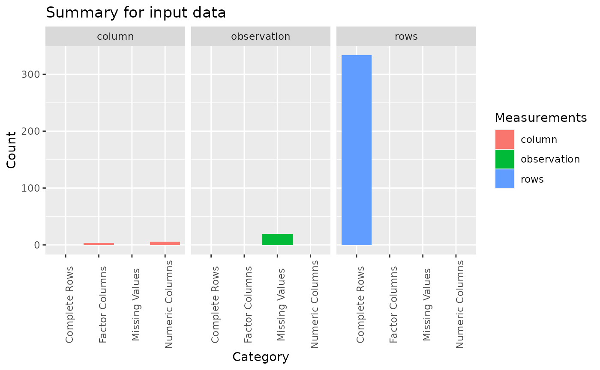
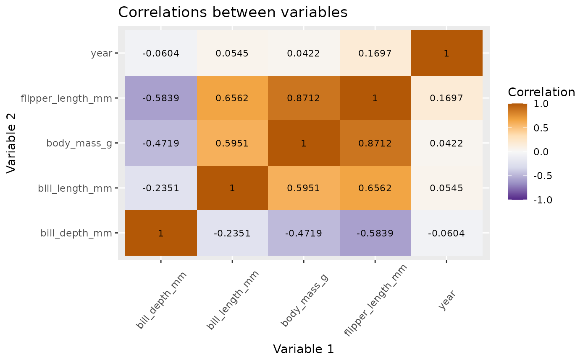
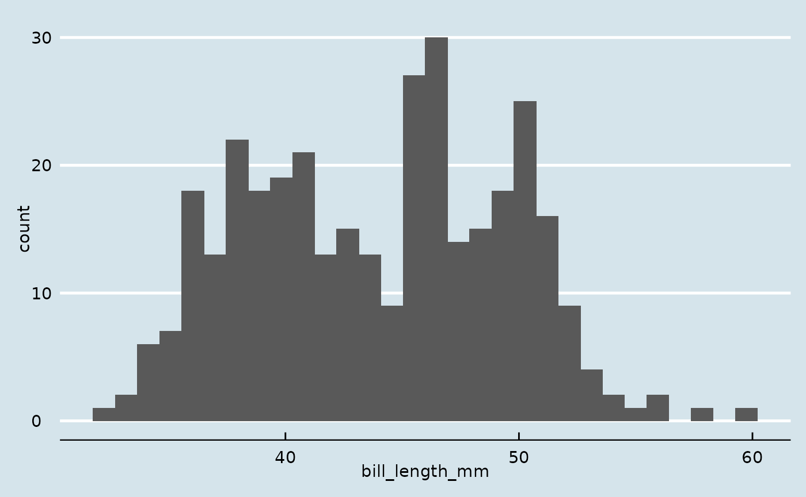
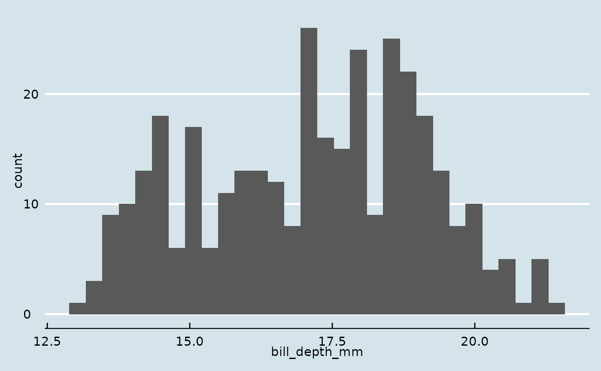
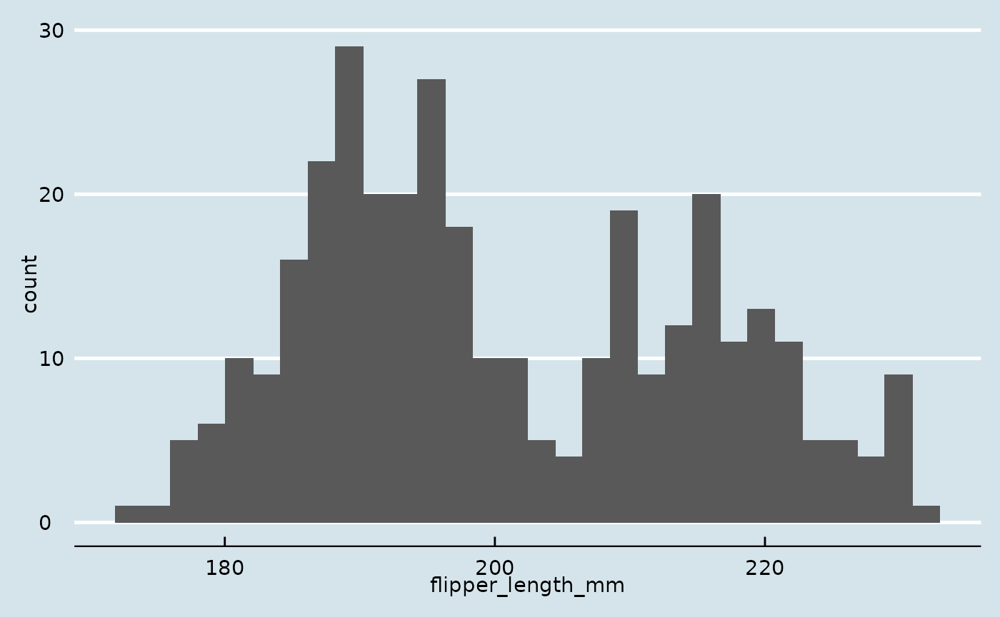
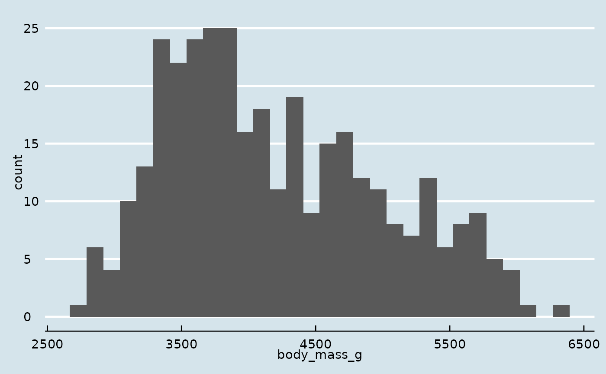
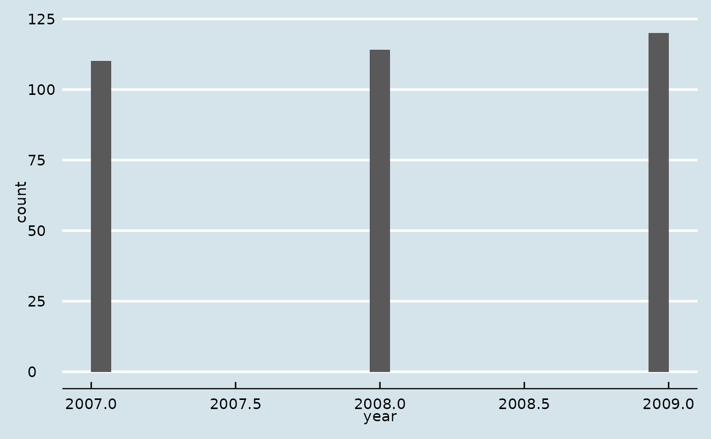
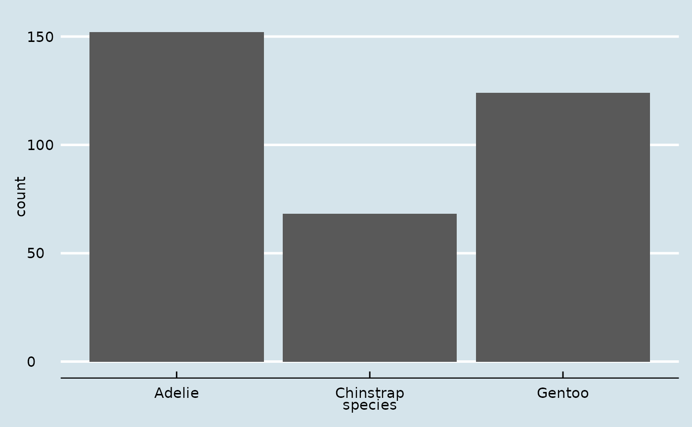
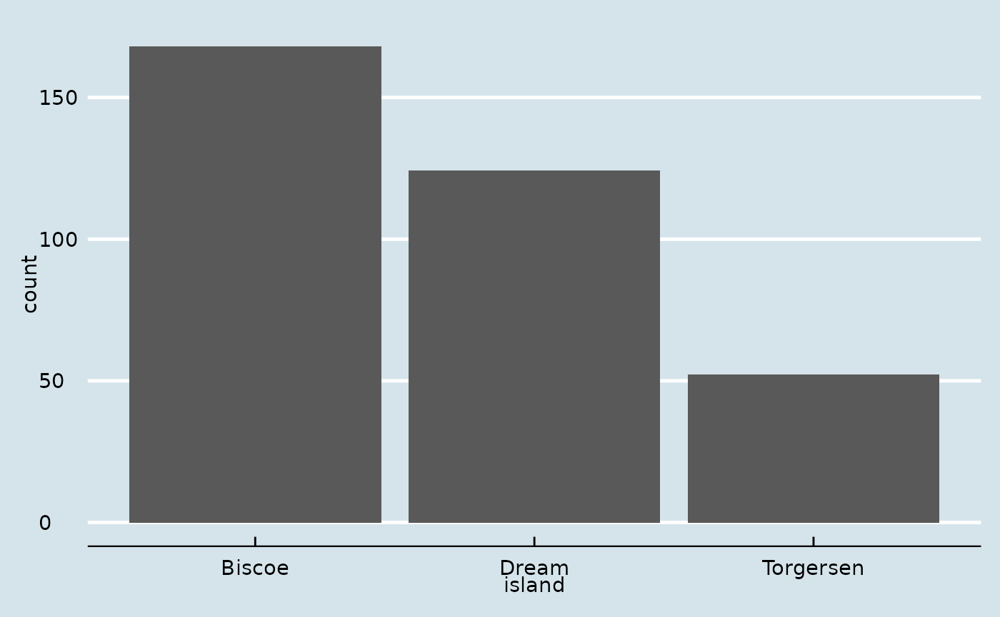
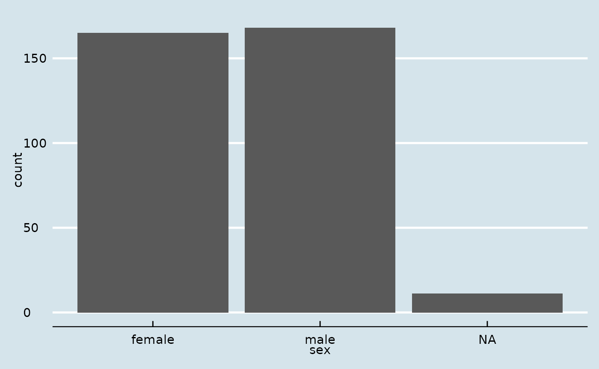

Quick and easy way to clean data and build exploratory data analysis plots.
This idea came up as we have been building data projects for quite some time now in the UBC MDS program. We noticed that there are some repetitive activities that occur when we first explore the data. This project will help you take a given raw data set an conduct some data cleansing and plotting with a minimal amount of code.
The main components of this package are:
To get started with instaeda, we load the library and some sample data (palmerpenguins) to showcase this package with:
Let’s try each function by the main components of this package.
First we will use the penguins data set as an example data frame to be used in the examples.
input_df <- palmerpenguins::penguins
head(input_df)
#> # A tibble: 6 x 8
#> species island bill_length_mm bill_depth_mm flipper_length_… body_mass_g sex
#> <fct> <fct> <dbl> <dbl> <int> <int> <fct>
#> 1 Adelie Torge… 39.1 18.7 181 3750 male
#> 2 Adelie Torge… 39.5 17.4 186 3800 fema…
#> 3 Adelie Torge… 40.3 18 195 3250 fema…
#> 4 Adelie Torge… NA NA NA NA <NA>
#> 5 Adelie Torge… 36.7 19.3 193 3450 fema…
#> 6 Adelie Torge… 39.3 20.6 190 3650 male
#> # … with 1 more variable: year <int>Data Checking
With the function plot_info() you can generate a plot with a basic summary metrics of the data such as the distribution of numeric columns, factor columns , complete rows and missing observations.
plot_info(input_df)
Data Cleansing
With the function divide_and_fill(), you can impute missing values in numerical columns. You can fill the the missing values with:
mean
median
random
In addition, you can also shuffle the data frame.
divide_and_fill(input_df, strategy='median', random=TRUE)
#> [1] "Try random shuffle!"
#> # A tibble: 344 x 8
#> species island bill_length_mm bill_depth_mm flipper_length_mm body_mass_g
#> <fct> <fct> <dbl> <dbl> <dbl> <dbl>
#> 1 Adelie Biscoe 38.1 17 181 3175
#> 2 Adelie Torgersen 33.5 19 190 3600
#> 3 Gentoo Biscoe 50 15.3 220 5550
#> 4 Adelie Dream 36.6 18.4 184 3475
#> 5 Adelie Dream 41.3 20.3 194 3550
#> 6 Gentoo Biscoe 47.7 15 216 4750
#> 7 Gentoo Biscoe 43.6 13.9 217 4900
#> 8 Adelie Dream 37.2 18.1 178 3900
#> 9 Adelie Biscoe 35 17.9 190 3450
#> 10 Gentoo Biscoe 45.1 14.5 215 5000
#> # … with 334 more rows, and 2 more variables: sex <fct>, year <dbl>Exploratory Visualization
With the function plot_corr(), you can generate a correlation plot on numerical columns with one of the following correlation methods:
pearson
kendall
spearman
plot_corr(input_df, method='pearson')
With the function plot_basic_distributions(), you can generate basic distribution plots for factor, character and/or numeric columns and access each plot in a named list.
plot_basic_distributions(input_df)
#> $bill_length_mm
#> `stat_bin()` using `bins = 30`. Pick better value with `binwidth`.
#> Warning: Removed 2 rows containing non-finite values (stat_bin).
#>
#> $bill_depth_mm
#> `stat_bin()` using `bins = 30`. Pick better value with `binwidth`.
#> Warning: Removed 2 rows containing non-finite values (stat_bin).
#>
#> $flipper_length_mm
#> `stat_bin()` using `bins = 30`. Pick better value with `binwidth`.
#> Warning: Removed 2 rows containing non-finite values (stat_bin).
#>
#> $body_mass_g
#> `stat_bin()` using `bins = 30`. Pick better value with `binwidth`.
#> Warning: Removed 2 rows containing non-finite values (stat_bin).
#>
#> $year
#> `stat_bin()` using `bins = 30`. Pick better value with `binwidth`.
#>
#> $species
#>
#> $island
#>
#> $sex
We hope this package will help you with your initial exploratory analysis in your projects.